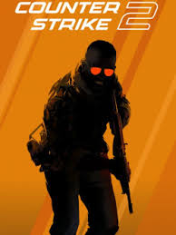

Counter-Strike 2
Lançado em: 27 de Setembro, 2023
Plataformas: PC
Sobre: Counter-Strike 2, produzido pela Valve, é uma “versão atualizada” de Counter-Strike: Global Offensive que, inclusive, foi removido da loja online da Valve. Contudo, quem jogou CS:GO permanece com as horas contabilizadas no CS2, reforçando que os dois são muito parecidos em termos de gameplay. Ainda assim, Counter-Strike 2 oferece muitas atualizações e novidades que justificam a chegada de um novo título, trazendo melhorias muito pedidas por jogadores, entre outros pontos.